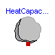
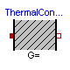
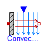
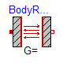
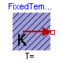
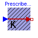
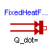
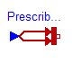
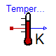
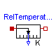
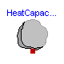
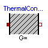
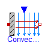
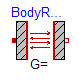
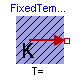
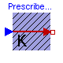
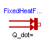
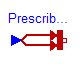
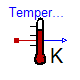
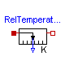
 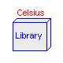
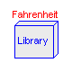
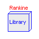
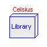
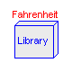
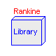
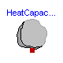
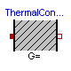
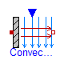
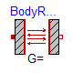
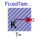
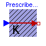
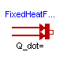
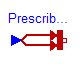
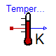
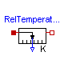
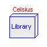
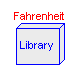
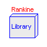
This package contains components to model 1-dimensional heat transfer with lumped elements. This allows especially to model heat transfer in machines provided the parameters of the lumped elements, such as the heat capacity of a part, can be determined by measurements (due to the complex geometries and many materials used in machines, calculating the lumped element parameters from some basic analytic formulas is usually not possible).
Example models how to use this library are given in subpackage Examples. For a first simple example, see Examples.TwoMasses where two masses with different initial temperatures are getting in contact to each other and arriving after some time at a common temperature. A more realistic example is provided in Examples.Drive where the heating of an electrical motor is modelled, see the following screen shot of this example:

The filled and non-filled red squares at the left and right side of a component represent thermal ports (connector HeatPort). Drawing a line between such squares means that they are thermally connected. The variables of a HeatPort connector are the temperature T at the port and the heat flow rate Q_flow flowing into the component (if Q_flow is positive, the heat flows into the element, otherwise it flows out of the element):
Modelica.SIunits.Temperature T "absolute temperature at port in Kelvin"; Modelica.SIunits.HeatFlowRate Q_flow "flow rate at the port in Watt";
Note, that all temperatures of this package, including initial conditions, are given in Kelvin. For convenience, in subpackages HeatTransfer.Celsius, HeatTransfer.Fahrenheit and HeatTransfer.Rankine components are provided such that source and sensor information is available in degree Celsius, degree Fahrenheit, or degree Rankine, respectively. Additionally, in package SIunits.Conversions conversion functions between the units Kelvin and Celsius, Fahrenheit, Rankine are provided. These functions may be used in the following way:
import SI=Modelica.SIunits;
import Modelica.SIunits.Conversions.*;
...
parameter SI.Temperature T = from_degC(25); // convert 25 degree Celsius to Kelvin
This package contains the following model components:
Examples (subpackage) Examples of library usage.
Interfaces (subpackage) Interface definitions.
HeatCapacitor Lumped thermal element storing heat.
ThermalConductor Lumped thermal element transporting heat without
storing it.
Convection Lumped thermal element for heat convection.
BodyRadiation Lumped thermal element for radiation heat transfer
between two bodies
FixedTemperature Fixed temperature boundary condition.
PrescribedTemperature Variable temperature boundary condition
FixedHeatFlow Fixed heat flow boundary condition.
PrescribedHeatFlow Variable heat flow boundary condition.
TemperatureSensor Absolute temperature sensor.
RelTemperatureSensor Relative temperature sensor.
HeatFlowSensor Sensor to determine the heat flow rate
between two ports.
Celsius (subpackage) Elements with Celsius interface.
Fahrenheit (subpackage) Elements with Fahrenheit interface.
Rankine (subpackage) Elements with Rankine interface.
There are several other components available, such as AxialConduction (discretized PDE in axial direction), which have been temporarily removed from this library. The reason is that these components reference material properties, such as thermal conductivity, and currently the Modelica design group is discussing a general scheme to describe material properties.
For technical details in the design of this library, see the following reference:
Michael Tiller (2001):
Introduction to Physical Modeling with Modelica.
Kluwer Academic Publishers Boston.
Release Notes:
Acknowledgements:
Several helpful remarks from the following persons are acknowledged:
John Batteh, Ford Motors, Dearborn, U.S.A;
Anton Haumer, Technical Consulting & Electrical Engineering, Austria;
Ludwig Marvan, VA TECH ELIN EBG Elektronik GmbH, Wien, Austria;
Hans Olsson, Dynasim AB, Sweden;
Hubertus Tummescheit, Lund Institute of Technology, Lund, Sweden.
Copyright © 2001-2002, Modelica Association, Michael Tiller and DLR.
The Modelica package is free software; it can be redistributed and/or modified under the terms of the Modelica license, see the license conditions and the accompanying disclaimer in the documentation of package Modelica in file "Modelica/package.mo".
| Name | Description |
|---|---|
| Examples | Example models to demonstrate the usage of package Modelica.Thermal.HeatTransfer |
| Interfaces | |
| HeatCapacitor | Lumped thermal element storing heat |
| ThermalConductor | Lumped thermal element transporting heat without storing it |
| Convection | Lumped thermal element for heat convection |
| BodyRadiation | Lumped thermal element for radiation heat transfer |
| FixedTemperature | Fixed temperature boundary condition in Kelvin |
| PrescribedTemperature | Variable temperature boundary condition in Kelvin |
| FixedHeatFlow | Fixed heat flow boundary condition |
| PrescribedHeatFlow | Prescribed heat flow boundary condition |
| TemperatureSensor | Absolute temperature sensor in Kelvin |
| RelTemperatureSensor | Relative Temperature sensor |
| HeatFlowSensor | Heat flow rate sensor |
| Celsius | Components with Celsius input and/or output |
| Fahrenheit | Components with Fahrenheit input and/or output |
| Rankine | Components with Rankine input and/or output |

This is a generic model for the heat capacity of a material. No specific geometry is assumed beyond a total volume with uniform temperature for the entire volume. Furthermore, it is assumed that the heat capacity is constant (indepedent of temperature).
The temperature T [Kelvin] of this component is a state. A default of T = 25 degree Celsius (= SIunits.Conversions.from_degC(25)) is used as start value for initialization. This usually means that at start of integration the temperature of this component is 25 degrees Celsius. You may, of course, define a different temperature as start value for initialization. Alternatively, it is possible to set parameter steadyStateStart to true. In this case the additional equation 'der(T) = 0' is used during initialization, i.e., the temperature T is computed in such a way that the component starts in steady state. This is useful in cases, where one would like to start simulation in a suitable operating point without being forced to integrate for a long time to arrive at this point.
Note, that parameter steadyStateStart is not available in the parameter menue of the simulation window, because its value is utilized during translation to generate quite different equations depending on its setting. Therefore, the value of this parameter can only be changed before translating the model.
This component may be used for complicated geometries where the heat capacity C is determined my measurements. If the component consists mainly of one type of material, the mass m of the component may be measured or calculated and multiplied with the specific heat capacity cp of the component material to compute C:
C = cp*m.
Typical values for cp at 20 degC in J/(kg.K):
aluminium 896
concrete 840
copper 383
iron 452
silver 235
steel 420 ... 500 (V2A)
wood 2500
| Name | Default | Description |
|---|---|---|
| C | Heat capacity of part (= cp*m) [J/K] | |
| steadyStateStart | false | true, if component shall start in steady state |
model HeatCapacitor "Lumped thermal element storing heat"
parameter SI.HeatCapacity C "Heat capacity of part (= cp*m)";
parameter Boolean steadyStateStart=false
"true, if component shall start in steady state";
SI.Temperature T(
start=from_degC(25)) "Temperature of part";
Interfaces.HeatPort_a port;
equation
T = port.T;
C*der(T) = port.Q_flow;
initial equation
if steadyStateStart then
der(T) = 0;
end if;
end HeatCapacitor;
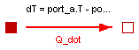
This is a model for transport of heat without storing it. It may be used for complicated geometries where the thermal conductance G (= inverse of thermal resistance) is determined by measurements and is assumed to be constant over the range of operations. If the component consists mainly of one type of material and a regular geometry, it may be calculated, e.g., with one of the following equations:
Conductance for a box geometry under the assumption that heat flows along the box length:
G = k*A/L
k: Thermal conductivity (material constant)
A: Area of box
L: Length of box
Conductance for a cylindrical geometry under the assumption that heat flows from the inside to the outside radius of the cylinder:
G = 2*pi*k*L/log(r_out/r_in)
pi : Modelica.Constants.pi
k : Thermal conductivity (material constant)
L : Length of cylinder
log : Modelica.Math.log;
r_out: Outer radius of cylinder
r_in : Inner radius of cylinder
Typical values for k at 20 degC in W/(m.K):
aluminium 220
concrete 1
copper 384
iron 74
silver 407
steel 45 .. 15 (V2A)
wood 0.1 ... 0.2
| Name | Default | Description |
|---|---|---|
| G | Constant thermal conductance of material [W/K] |
model ThermalConductor "Lumped thermal element transporting heat without storing it" extends Interfaces.Element1D; parameter SI.ThermalConductance G "Constant thermal conductance of material"; equation Q_flow = G*dT; end ThermalConductor;
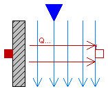
This is a model of linear heat convection, e.g., the heat transfer between a plate and the surrounding air. It may be used for complicated solid geometries and fluid flow over the solid by determining the convective thermal conductance Gc by measurements. The basic constitutive equation for convection is
Q_flow = Gc*(solid.T - fluid.T);
Q_flow: Heat flow rate from connector 'solid' (e.g. a plate)
to connector 'fluid' (e.g. the surrounding air)
Gc = G.signal[1] is an input signal to the component, since Gc is nearly never constant in practice. For example, Gc may be a function of the speed of a cooling fan. For simple situations, Gc may be calculated according to
Gc = A*h A: Convection area (e.g. perimeter*length of a box) h: Heat transfer coefficient
where the heat transfer coefficient h is calculated from properties of the fluid flowing over the solid. Examples:
Machines cooled by air (empirical, very rough approximation according to R. Fischer: Elektrische Maschinen, 10th edition, Hanser-Verlag 1999, p. 378):
h = 7.8*v^0.78 [W/(m2.K)] (forced convection)
= 12 [W/(m2.K)] (free convection)
where
v: Air velocity in [m/s]
Laminar flow with constant velocity of a fluid along a flat plate where the heat flow rate from the plate to the fluid (= solid.Q_flow) is kept constant (according to J.P.Holman: Heat Transfer, 8th edition, McGraw-Hill, 1997, p.270):
h = Nu*k/x;
Nu = 0.453*Re^(1/2)*Pr^(1/3);
where
h : Heat transfer coefficient
Nu : = h*x/k (Nusselt number)
Re : = v*x*rho/mue (Reynolds number)
Pr : = cp*mue/k (Prandtl number)
v : Absolute velocity of fluid
x : distance from leading edge of flat plate
rho: density of fluid (material constant
mue: dynamic viscosity of fluid (material constant)
cp : specific heat capacity of fluid (material constant)
k : thermal conductivity of fluid (material constant)
and the equation for h holds, provided
Re < 5e5 and 0.6 < Pr < 50
model Convection "Lumped thermal element for heat convection"
SI.HeatFlowRate Q_flow "Heat flow rate from solid -> fluid";
SI.Temperature dT "= solid.T - fluid.T";
Modelica.Blocks.Interfaces.RealInput Gc(
redeclare type SignalType = SI.ThermalConductance)
"Signal representing the convective thermal conductance in [W/K]";
Interfaces.HeatPort_a solid;
Interfaces.HeatPort_b fluid;
equation
dT = solid.T - fluid.T;
solid.Q_flow = Q_flow;
fluid.Q_flow = -Q_flow;
Q_flow = Gc*dT;
end Convection;
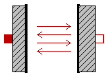
This is a model describing the thermal radiation, i.e., electromagnetic radiation emitted between two bodies as a result of their temperatures. The following constitutive equation is used:
Q_flow = Gr*sigma*(port_a.T^4 - port_b.T^4);
where Gr is the radiation conductance and sigma is the Stefan-Boltzmann constant (= Modelica.Constants.sigma). Gr may be determined by measurements and is assumed to be constant over the range of operations.
For simple cases, Gr may be analytically computed. The analytical equations use epsilon, the emission value of a body which is in the range 0..1. Epsilon=1, if the body absorbs all radiation (= black body). Epsilon=0, if the body reflects all radiation and does not absorb any.
Typical values for epsilon: aluminium, polished 0.04 copper, polished 0.04 gold, polished 0.02 paper 0.09 rubber 0.95 silver, polished 0.02 wood 0.85..0.9
Analytical Equations for Gr
Small convex object in large enclosure (e.g., a hot machine in a room):
Gr = e*A
where
e: Emission value of object (0..1)
A: Surface area of object where radiation
heat transfer takes place
Two parallel plates:
Gr = A/(1/e1 + 1/e2 - 1)
where
e1: Emission value of plate1 (0..1)
e2: Emission value of plate2 (0..1)
A : Area of plate1 (= area of plate2)
Two long cylinders in each other, where radiation takes place from the inner to the outer cylinder):
Gr = 2*pi*r1*L/(1/e1 + (1/e2 - 1)*(r1/r2))
where
pi: = Modelica.Constants.pi
r1: Radius of inner cylinder
r2: Radius of outer cylinder
L : Length of the two cylinders
e1: Emission value of inner cylinder (0..1)
e2: Emission value of outer cylinder (0..1)
| Name | Default | Description |
|---|---|---|
| Gr | Net radiation conductance between two surfaces (see docu) [m2] |
model BodyRadiation
"Lumped thermal element for radiation heat transfer"
extends Interfaces.Element1D;
parameter Real Gr(unit="m2")
"Net radiation conductance between two surfaces (see docu)";
equation
Q_flow = Gr*Modelica.Constants.sigma*(port_a.T^4 - port_b.T^4);
end BodyRadiation;
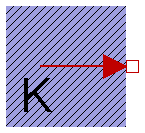
This model defines a fixed temperature T at its port in Kelvin, i.e., it defines a fixed temperature as a boundary condition.
| Name | Default | Description |
|---|---|---|
| T | Fixed temperature at port [K] |
model FixedTemperature "Fixed temperature boundary condition in Kelvin" parameter SI.Temperature T "Fixed temperature at port"; Interfaces.HeatPort_b port; equation port.T = T; end FixedTemperature;
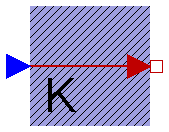
This model represents a variable temperature boundary condition. The temperature in [K] is given as input signal T to the model. The effect is that an instance of this model acts as an infinite reservoir able to absorb or generate as much energy as required to keep the temperature at the specified value.
model PrescribedTemperature
"Variable temperature boundary condition in Kelvin"
Interfaces.HeatPort_b port;
Modelica.Blocks.Interfaces.RealInput T(
redeclare type SignalType = SI.Temperature);
equation
port.T = T;
end PrescribedTemperature;
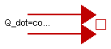
This model allows a specified amount of heat flow rate to be "injected" into a thermal system at a given port. The constant amount of heat flow rate Q_flow is given as a parameter. The heat flows into the component to which the component FixedHeatFlow is connected, if parameter Q_flow is positive.
| Name | Default | Description |
|---|---|---|
| Q_flow | Fixed heat flow rate at port [W] |
model FixedHeatFlow "Fixed heat flow boundary condition" parameter SI.HeatFlowRate Q_flow "Fixed heat flow rate at port"; Interfaces.HeatPort_b port; equation port.Q_flow = -Q_flow; end FixedHeatFlow;
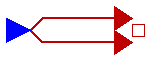
This model allows a specified amount of heat flow rate to be "injected" into a thermal system at a given port. The amount of heat is given by the input signal Q_flow into the model. The heat flows into the component to which the component PrescribedHeatFlow is connected, if the input signal is positive.
model PrescribedHeatFlow "Prescribed heat flow boundary condition"
Modelica.Blocks.Interfaces.RealInput Q_flow(
redeclare type SignalType = SI.HeatFlowRate);
Interfaces.HeatPort_b port;
equation
port.Q_flow = -Q_flow;
end PrescribedHeatFlow;
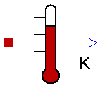
This is an ideal absolute temperature sensor which returns the temperature of the connected port in Kelvin as an output signal. The sensor itself has no thermal interaction with whatever it is connected to. Furthermore, no thermocouple-like lags are associated with this sensor model.
model TemperatureSensor "Absolute temperature sensor in Kelvin"
Modelica.Blocks.Interfaces.RealOutput T(
redeclare type SignalType = SI.Temperature);
Interfaces.HeatPort_a port;
equation
T = port.T;
port.Q_flow = 0;
end TemperatureSensor;
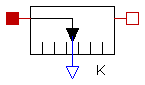
The relative temperature "port_a.T - port_b.T" is determined between the two ports of this component and is provided as output signal in Kelvin.
model RelTemperatureSensor "Relative Temperature sensor"
extends Modelica.Icons.TranslationalSensor;
Interfaces.HeatPort_a port_a;
Interfaces.HeatPort_b port_b;
Modelica.Blocks.Interfaces.RealOutput T_rel(
redeclare type SignalType = SI.Temperature);
equation
T_rel = port_a.T - port_b.T;
0 = port_a.Q_flow;
0 = port_b.Q_flow;
end RelTemperatureSensor;
Modelica.Thermal.HeatTransfer.HeatFlowSensor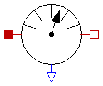
This model is capable of monitoring the heat flow rate flowing through this component. The sensed value of heat flow rate is the amount that passes through this sensor while keeping the temperature drop across the sensor zero. This is an ideal model so it does not absorb any energy and it has no direct effect on the thermal response of a system it is included in. The output signal is positive, if the heat flows from port_a to port_b.
model HeatFlowSensor "Heat flow rate sensor"
extends Modelica.Icons.RotationalSensor;
Modelica.Blocks.Interfaces.RealOutput Q_flow(
redeclare type SignalType = SI.HeatFlowRate) "Heat flow from port_a to port_b";
Interfaces.HeatPort_a port_a;
Interfaces.HeatPort_b port_b;
equation
port_a.T = port_b.T;
port_a.Q_flow + port_b.Q_flow = 0;
Q_flow = port_a.Q_flow;
end HeatFlowSensor;